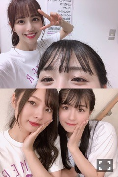
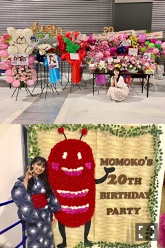

2019/1129Friいい肉の日。だって！お肉食べちゃおうか
お久しぶりです。
3期、4期合同ライブ
来て下さった方、応援して下さった方
ありがとうございました。
夏のツアーはお休みしていて、
神宮でも出られるところだけでしたので
初めから最後までしっかりライブに
参加するのはとっても久しぶりでした。
リハーサルで、スタッフさんにも
メンバーにも迷惑をかけてしまうし、
もう出ない方がいいんだと弱気になったり
んー常に弱気でしたが、終わってみると
楽しかったなぁと思えます。
4期生と一緒だったおかげで、
お話できるようになりました。
そして4期生と一緒だったおかげで、
3期生のことがよりすきになりました。
みんなすごくしっかりしています。
時間は進んでいるのですね、
みんな大人になってるんだなぁと
とても感動しました。
時間をとめて欲しいこともたくさんです
桃子はとても多いです
でも時間が経ったからこそ感動するの
複雑だけど素敵ですよね
リハーサルで苦戦したのは
夜明けと日常でした、
ダンスが覚えられないももこには
本当に大変な事なのですよ、
三番目の風は三期単独ライブ以来の
フル披露、フル披露！
気づいてくれたのかな？
ユニット曲では、可愛い子達と
でこぴんを披露させて頂きました。
最初で最後だろうなと思いながら
可愛い衣装で踊れて楽しかったです^ ^
やくぼちゃん、あやめちゃん、はづ
れんたん、ありがとうありがとう、❤︎
写真を写真を、！
年末ですね、あっという間の1年でした
なにをしていたんだろう、
時が流れて感動することが素敵とさっきは
言ったけれど、最近は時が流れていることが
とても寂しいです、時を戻す方法がないか
調べたりもしましたが、
今はまだそんなことできないのでしょう、
未来を考えると楽しみな事もありますが
不安の方が大きいです、
いつも未来が怖いです。
未来も過去も考えずに
今を楽しめたらいいな
年末の忙しさに負けないように
12月頑張ります、
2019/0911Wed
お疲れ様です、桃子です。
お久しぶりのブログになりました。
そして神宮の3日間は少しでしたが
ライブに出させて頂きました。
リハーサルに参加するのも、たくさんの
メンバーに会うのも久しぶりでしたので
気まずくて居づらかったりもしたけど、
みんなが普通に接してくれて
優しかったです。
心がへこんでいる時には聞く耳を持てず、
自分の殻に閉じこもってしまうので...
お休みをする前よりも、
もっとたくさんの優しさを、
感じられることができたということは
前よりも少し元気になれているようです。
3番目の風では、初めてステージに
立った時くらい緊張した気がしますよね、
トキトキメキメキはやっぱり
れんたんのキラキラが
可愛すぎてメロメロで
たまおちゃんが、ももこの斜め前で
輝いているのも心がいっぱいなくらい
愛おしい、とってもすきです、
3期曲で1番すきになりました


だいすき、へへへ
キスの手裏剣は隣にいた
さくらさまが可愛かったです
神宮しか出れていないけど4期生とも
目を合わすことができて、
レイちゃんと少しお話ができました、
あやめちゃんともお話したいな
ももこを少しでもすきって言ってくれた
珍しすぎるおふたりなんです
でも乃木坂に入ったいま、
ももこをすきと言ってしまったことを
後悔しているかもしれない、笑
れいかさんが卒業されました。
リハーサルでお久しぶりにお会いした時
ももこ、最近どうなの？と
優しく声をかけて来てくださって、
少し前にはらじらーに来てくださって、
たくさん話すことは少なかったけど
れいかさんの温かさに救われました
心が苦しかったです。
ありがとうございました。
9月の7日、8日は
名古屋での個別握手会、全国握手会
ありがとうございました。
個別握手会では、
生誕祭をしていただきました。
レーンがももこのすきなクマさんに
そお星人、ももこの描くももくまさん。
みなさんが寄せ書きしてくれた
メッセージやアルバムも、
クマさんとフクロウのぬいぐるみ
中国のファンの方々からの絵本も
そして、沢山のお花もいただきました！

沢山の愛と優しさで心がいっぱいになって
申し訳なさもいっぱいでした、笑
本当にありがとうございました。
もうすぐ20歳になります。

2019/09/11 12:24｜個別ページ｜コメント(1105)
2019/0730Tue梅干しの日
こんにちは
とても暑いですの、夏ですね
冬がすきって言ってる人が近くにいると
ももこも冬がすきってなるの
でも冬になったら寒いの苦手だ
となってしまうのだろうな
自分勝手でいやだよね、ごめんなさい
久しぶりにれんたまに会いました
2人ともぎゅーしてくれるから
嬉しくて心が苦しかったです。
とてつもなく可愛い2人が
どこまでも愛おしいです。
少し前のれんたん、
ももこ、もうすぐ20歳なのにな
どうしてこう真逆かね、^ ^
たまおちゃんよりはすこし
大人っぽく見えたりしますもの
でしょうかね～？
あまり写真を撮らないももちゃんと
いつも撮ってくれてありがとう
れんももたまでした、すきだ
2019/0702Tueおうどんの日
おはようございます。
お昼ご飯なに食べましょう
「一年折り返しの日」でもあるらしい。
30日の握手会に来てくださった方
ありがとうございました。
ももこのファンの方はどうして
あんなに優しいのですの。
ツアー欠席を発表して、初めて皆さんに
お会いする機会だったので、ものすごく
元気にいこう、心配なんて無用だ！と
見せつけようと頑張れました
ファンの方々も先輩方も3期生も
どうしようもない、ももこに優しいです。
優しさが心に染みると苦しくなります、
ごめんなさいとありがとうございます
でいっぱいです。
明日が来るのを楽しみだなぁと思たら
毎日が幸せになりそう、ね。
元気で居続けられるようになったら
無敵だと思いませんか、
居続けられたら無敵、
ももちゃん無敵になりたいや。
ももたま
れんもも
れんももたま
れんたまだいすきじゃん（ ; ; ）
梅桃でのお祭りも
梅桃蓮珠楓の流しパーティも楽しみだよ、
仲良くしてくれてありがとう
楽しみって思えるって幸せだね
2019/0624Mon大園桃子です。
こんばんは、大園桃子です。
先程、公式ホームページの方でも
発表がありましたが、
真夏の全国ツアー2019
をお休みさせていただくことになりました。
体調不良が続いていて、リハーサルに
参加できなかったり、グループの活動を
休んでしまうことが多くありました。
少しの間、待っていてくださると
嬉しいのですが、そんなわがままを
言うのも申し訳ないので元気になって
グループに戻ったら、また
見てもらえるように頑張ります。
突然の発表で、沢山の方にご心配
ご迷惑をかけてしまい申し訳ありません。
全国ツアー以外の活動は、
できる範囲でスタッフさんと
相談しながら続けていく予定です。
これからもよろしくお願いします。
2019/06/24 19:18｜個別ページ｜コメント(2098)